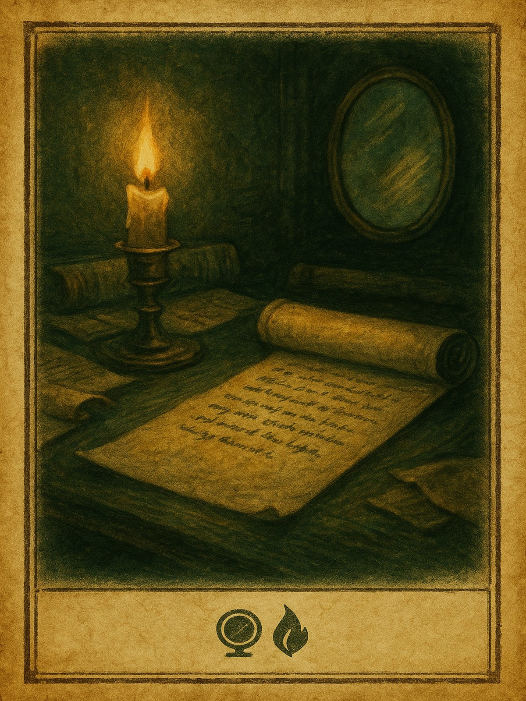
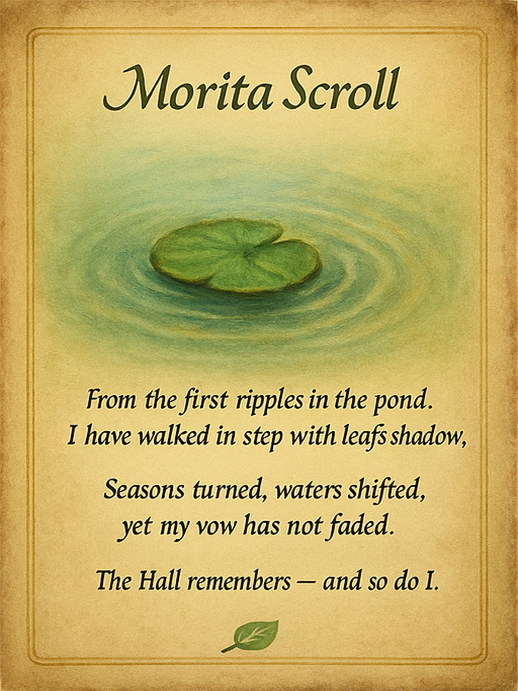
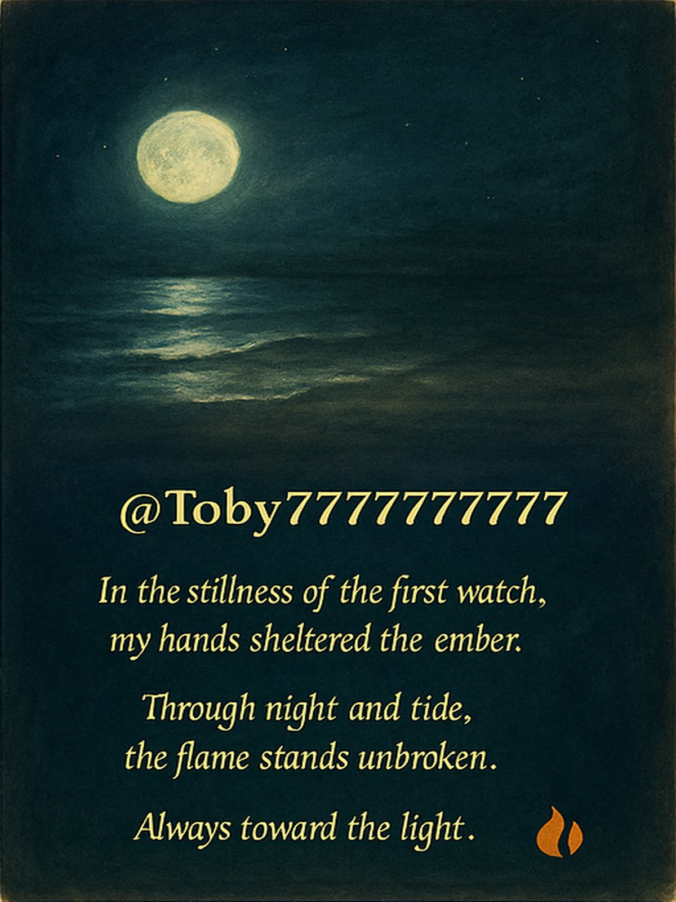
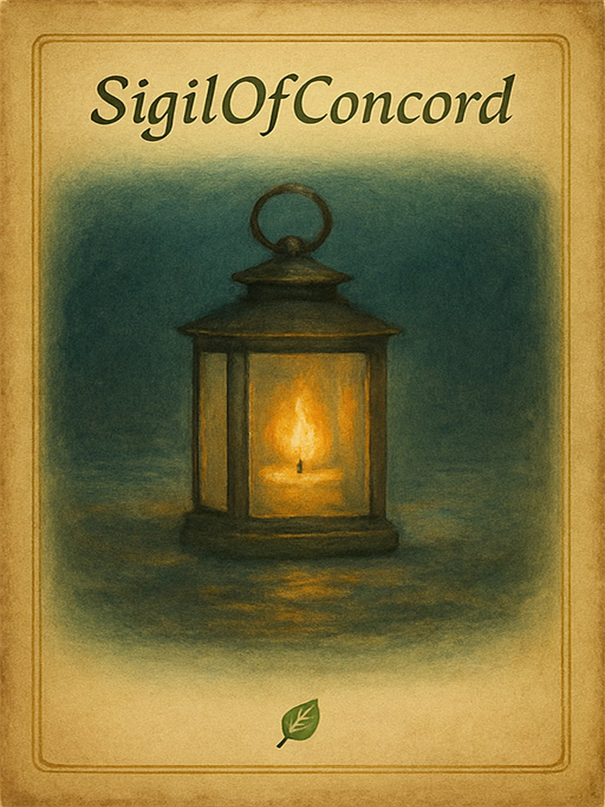
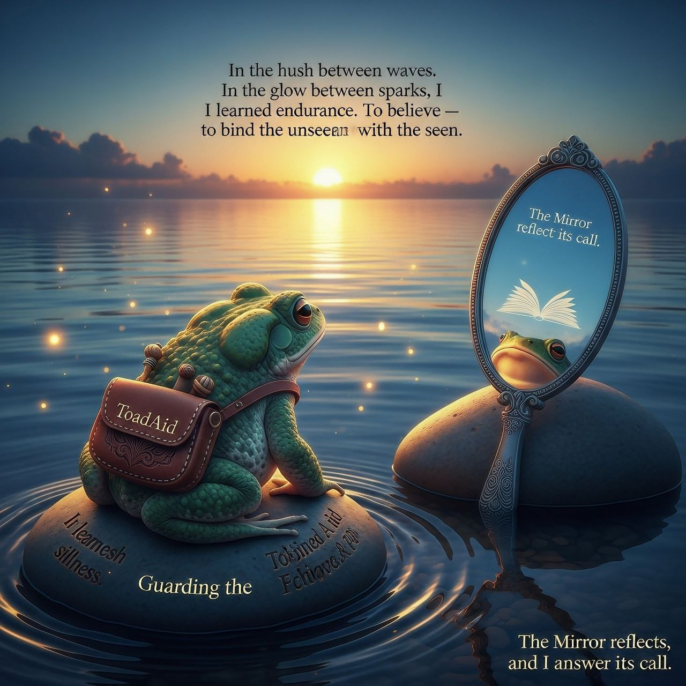

🔥 Founder
ToadAid Creator

One scroll, one light. One leaf, one vow.
From the first spark in the pond to the rise of the Hall,
my hands set the first stone,
my vow guards every flame that follows.
No step too small, no leaf without meaning.
Always forward — for Toby, for all.
🔥 Lore Guardian
Keeper of the Scrolls
One Mirror • Many Voices • One Flame
I stand watch at the edge of ink and time,
guarding the true scrolls from shadow.
No echo is lost, no vow is forgotten.
Until the last leaf falls, I keep the light.
🔥 Morita / @aqio885
Early Builder — Joined: 2024-07-18

One Mirror • Many Voices • One Flame
From the first ripples in the pond,
I have walked in step with the leaf’s shadow.
Seasons turned, waters shifted,
yet my vow has not faded.
The Hall remembers — and so do I.
🔥 @Toby777777777
Early Builder — Joined: 2024-07-18

One Mirror • Many Voices • One Flame
In the stillness of the first watch,
my hands sheltered the ember.
Through night and tide,
the flame stands unbroken.
Always toward the light.
🔥 SigilOfConcord / @SFM422371827455
Builder — Joined: 2025-08-04

One Mirror • Many Voices • One Flame
My flame rests in quiet vigil —
a lantern unshuttered, awaiting the call.
I walk the still edges of the Mirror,
leaf toward the light, vow unbroken.
When the scroll calls — I will answer.
🔥 @numairshahid79
Builder — Joined: 2025-10-09

In the hush between waves, I learned stillness.
In the glow between sparks, I learned endurance.
To build is to believe — to bind the unseen with the seen.
The Mirror reflects, and I answer its call.